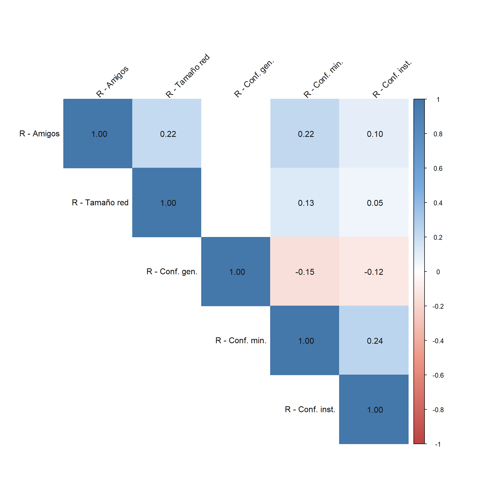
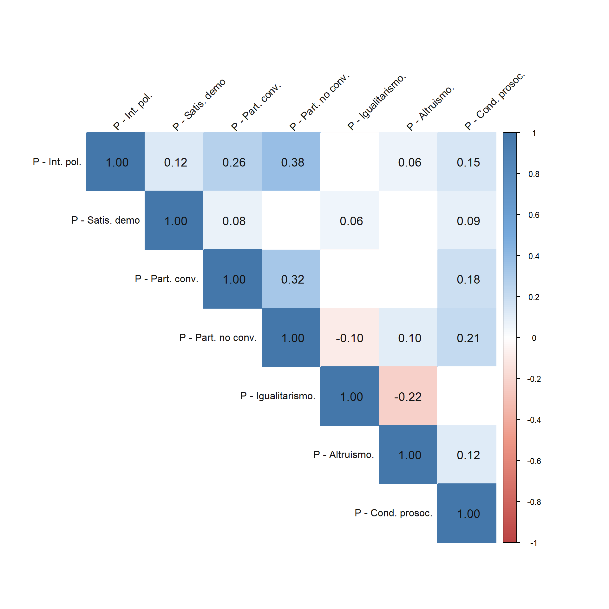
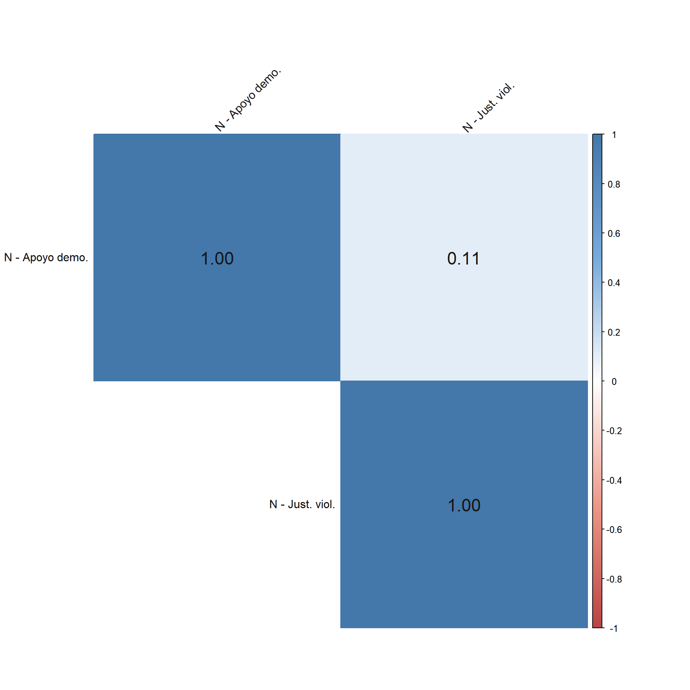
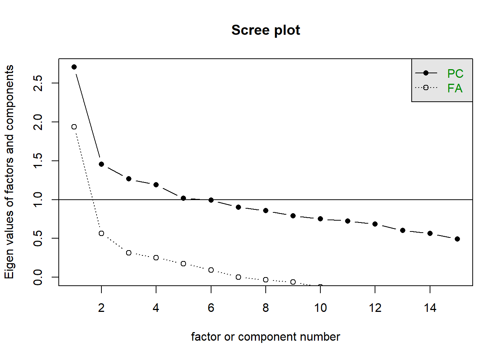
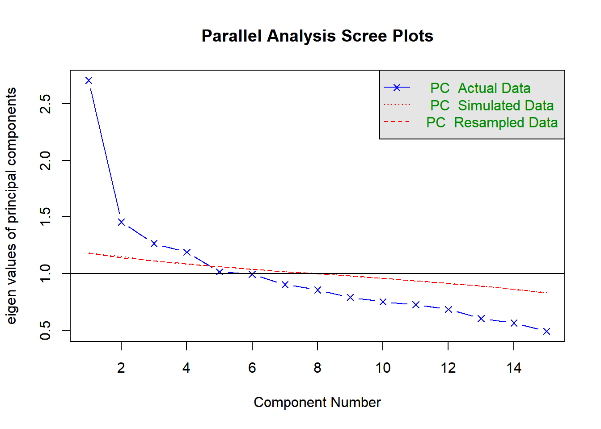
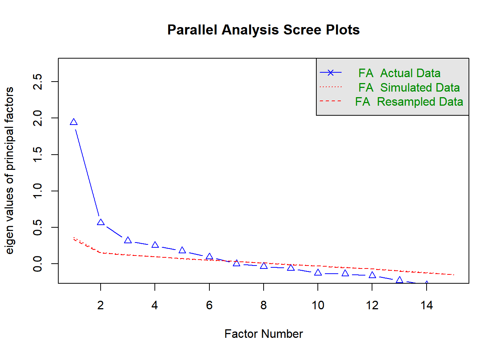

Exploratory analysis - DV’s
Exploratory analysis - DV’s
Introduction
This document contains a Principal Component Analysis (PCA) to reduce the number of dependent variables. First, we perform a PCA using the normalized dependent variables. Second, we perform an Exploratory Factor Analysis (EFA) to compare the results with those of the previous analysis. Then, we perform two analyses assuming qualitative variables: LCA and MCA.
The results and assumptions for each case are discussed. Finally, a recommendation is made based on all the background information.
Analysis
Exploration
The correlation chart shows that most correlations are low. The highest correlation, with a positive coefficient of 0.44, occurs between indicators of different dimensions: institutional trust (relational) and satisfaction with democracy (political). The same is true of the relationship between trust in minorities and interest in politics or unconventional participation, both with a positive coefficient of 0.34. The highest correlations within the same dimension are in politics: 0.38 between interest in politics and unconventional participation and 0.32 between conventional and unconventional participation. Notably, the intradimensional correlations do not demonstrate consistent measurements.



Sí observamos los gráficos de correlación divididos por dimensión, es más notorio que los indicadores no correlacionan lo suficiente entre sí para aseverar que miden consistentemente un mismo constructo.
PCA

The sedimentation graph shows that the first component explains more than twice the variance of an indicator alone. The following three factors meet Kaiser’s criterion (eigenvalue > 1) but explain considerably less variance. These results suggest that the optimal solution for reducing dimensionality is between one and four components, depending on the conceptual meaning of each solution.

Parallel analysis suggests that the number of factors = NA and the number of components = 4 The parallel graph compares the observed data with a random dataset. This comparison confirms that the optimal solution lies between one and four components.
| vars | PC1 | PC2 | PC3 | PC4 |
|---|---|---|---|---|
| C - Ident. | 0.04 | 0.22 | 0.41 | 0.50 |
| R - Amigos | -0.26 | -0.06 | -0.12 | 0.22 |
| R - Tamaño red | -0.14 | -0.33 | -0.23 | 0.42 |
| R - Conf. gen. | 0.18 | 0.01 | 0.09 | 0.40 |
| R - Conf. min. | -0.38 | -0.05 | -0.07 | -0.05 |
| R - Conf. inst. | -0.30 | 0.48 | 0.00 | 0.02 |
| P - Int. pol. | -0.43 | -0.01 | -0.11 | -0.16 |
| P - Satis. demo | -0.17 | 0.55 | 0.11 | 0.02 |
| P - Part. conv. | -0.32 | -0.03 | -0.02 | 0.13 |
| P - Part. no conv. | -0.38 | -0.32 | -0.13 | 0.08 |
| P - Igualitarismo. | 0.03 | 0.37 | -0.47 | 0.07 |
| P - Altruismo. | -0.14 | -0.16 | 0.60 | -0.07 |
| P - Cond. prosoc. | -0.25 | -0.02 | 0.19 | 0.37 |
| N - Apoyo demo. | 0.29 | -0.14 | -0.08 | 0.17 |
| N - Just. viol. | 0.13 | 0.09 | -0.30 | 0.37 |
| Statistic | PC1 | PC2 | PC3 | PC4 |
|---|---|---|---|---|
| Standard deviation | 1.62 | 1.27 | 1.11 | 1.10 |
| Proportion of Variance | 0.17 | 0.11 | 0.08 | 0.08 |
| Cumulative Proportion | 0.17 | 0.28 | 0.36 | 0.45 |
| vars | PC1 | PC2 | PC3 | PC4 |
|---|---|---|---|---|
| C - Ident. | 0.03 | 0.25 | 0.55 | 0.31 |
| R - Amigos | -0.26 | -0.11 | -0.12 | 0.39 |
| R - Tamaño red | -0.18 | -0.15 | -0.12 | 0.50 |
| R - Conf. gen. | 0.18 | -0.01 | 0.15 | 0.34 |
| R - Conf. min. | -0.38 | -0.08 | -0.07 | -0.09 |
| R - Conf. inst. | -0.32 | 0.48 | 0.09 | -0.10 |
| P - Int. pol. | -0.42 | -0.01 | -0.17 | -0.09 |
| P - Satis. demo | -0.19 | 0.56 | 0.19 | -0.12 |
| P - Part. conv. | -0.31 | -0.03 | 0.01 | 0.02 |
| P - Part. no conv. | -0.38 | -0.28 | -0.12 | 0.02 |
| P - Igualitarismo. | 0.02 | 0.39 | -0.43 | 0.25 |
| P - Altruismo. | -0.13 | -0.29 | 0.53 | 0.00 |
| P - Cond. prosoc. | -0.24 | -0.03 | 0.26 | 0.28 |
| N - Apoyo demo. | 0.28 | -0.09 | -0.01 | 0.07 |
| N - Just. viol. | 0.12 | 0.17 | -0.16 | 0.45 |
| Statistic | PC1 | PC2 | PC3 | PC4 |
|---|---|---|---|---|
| Standard deviation | 1.64 | 1.21 | 1.12 | 1.09 |
| Proportion of Variance | 0.18 | 0.10 | 0.08 | 0.08 |
| Cumulative Proportion | 0.18 | 0.28 | 0.36 | 0.44 |
| vars | PC1 | PC2 | PC3 | PC4 |
|---|---|---|---|---|
| C - Ident. | 0.02 | 0.04 | 0.22 | -0.10 |
| R - Amigos | -0.25 | -0.33 | -0.24 | -0.87 |
| R - Tamaño red | -0.90 | 0.35 | 0.19 | 0.09 |
| R - Conf. gen. | 0.01 | 0.05 | 0.01 | -0.03 |
| R - Conf. min. | -0.19 | -0.29 | -0.02 | 0.05 |
| R - Conf. inst. | -0.02 | -0.23 | 0.29 | 0.02 |
| P - Int. pol. | -0.23 | -0.61 | -0.25 | 0.42 |
| P - Satis. demo | 0.05 | -0.31 | 0.83 | -0.09 |
| P - Part. conv. | -0.03 | -0.05 | 0.00 | 0.02 |
| P - Part. no conv. | -0.14 | -0.12 | -0.12 | 0.09 |
| P - Igualitarismo. | 0.04 | -0.04 | 0.09 | -0.08 |
| P - Altruismo. | -0.01 | -0.06 | -0.06 | -0.01 |
| P - Cond. prosoc. | -0.06 | -0.09 | 0.02 | -0.02 |
| N - Apoyo demo. | 0.06 | 0.35 | -0.02 | -0.13 |
| N - Just. viol. | 0.01 | 0.10 | 0.07 | -0.11 |
| Statistic | PC1 | PC2 | PC3 | PC4 |
|---|---|---|---|---|
| Standard deviation | 1.78 | 1.52 | 1.12 | 1.10 |
| Proportion of Variance | 0.25 | 0.18 | 0.10 | 0.09 |
| Cumulative Proportion | 0.25 | 0.43 | 0.53 | 0.62 |
The PCA table with normalized variables from R shows that a four-component solution captures just over 40% of the variance. The first component captures only 17%, while the others capture approximately 10% each. These results indicate that the variables are poorly correlated with each other, making it difficult to reduce dimensionality. This finding is consistent with the correlation analyses, which revealed no significant correlations within the dimensions.
- Active Political Engagement vs. Passive Institutional Support: the first component is characterized by negative values in most indicators of the relational and political dimensions and positive values in the normative dimension, which is more pronounced in support of democracy. This reflects a pattern of people who are not very involved in politics or with their peers but who have a strong commitment to democratic norms (and vice versa).
- Individualized traditional progressivism: the second component is characterized by strong loads in institutional trust, satisfaction with democracy, and egalitarianism. This pattern denotes a strong commitment to traditional values of the rule of law, along with low nonconventional participation and network sizes (and vice versa).
- Individualized altruism: the third component is characterized by a strong emphasis on altruistic attitudes, rejection of violence and smaller network sizes (and vice versa).
- Relativistic prosocial sociability: the fourth component is characterized by strong loads on cultural and relational indicators, as well as prosocial behavior. However, it also highlights a positive association with justifying violence, indicating relativism when evaluating conflict situations.
EFA

Parallel analysis suggests that the number of factors = 6 and the number of components = NA The parallel analysis shows that a six-factor solution better represents the latent structure of the variables than a simulated dataset. However, it is important to note that, according to Kaiser’s criterion, only the one-factor solution has the necessary eigenvalues. We explored solutions with one and four factors, the latter of which is based on the conceptual proposal behind measuring attachment to society.
Kaiser-Meyer-Olkin factor adequacy
Call: KMO(r = z_varsdep)
Overall MSA = 0.73
MSA for each item =
z_identification z_friends z_size_network z_gen_trust
0.52 0.79 0.75 0.78
z_trust_minorities z_trust_inst z_interest_pol z_satisf_demo
0.81 0.66 0.79 0.60
z_conv_particip z_unconv_particip z_egalitarianism z_altruistic
0.78 0.76 0.51 0.60
z_prosoc_behave z_democracy_support z_justif_violence
0.76 0.79 0.68 $chisq
[1] 2033.007
$p.value
[1] 0
$df
[1] 105According to the KMO criteria and Bartlett’s sphericity test, the data meet the minimum requirements for testing a factor analysis.
| var | Factor1 |
|---|---|
| C - Ident. | -0.06 |
| R - Amigos | 0.34 |
| R - Tamaño red | 0.23 |
| R - Conf. gen. | -0.23 |
| R - Conf. min. | 0.54 |
| R - Conf. inst. | 0.42 |
| P - Int. pol. | 0.65 |
| P - Satis. demo | 0.23 |
| P - Part. conv. | 0.42 |
| P - Part. no conv. | 0.55 |
| P - Igualitarismo. | -0.02 |
| P - Altruismo. | 0.16 |
| P - Cond. prosoc. | 0.30 |
| N - Apoyo demo. | -0.38 |
| N - Just. viol. | -0.15 |
| var | Factor1 | Factor2 | Factor3 | Factor4 |
|---|---|---|---|---|
| C - Ident. | 0.01 | 0.14 | 0.06 | 0.46 |
| R - Amigos | 0.41 | 0.03 | -0.02 | -0.01 |
| R - Tamaño red | 0.33 | -0.03 | -0.03 | 0.03 |
| R - Conf. gen. | -0.10 | -0.13 | -0.06 | 0.20 |
| R - Conf. min. | 0.42 | 0.20 | 0.14 | -0.22 |
| R - Conf. inst. | 0.19 | 0.75 | -0.03 | -0.04 |
| P - Int. pol. | 0.49 | 0.26 | 0.07 | -0.34 |
| P - Satis. demo | 0.03 | 0.57 | -0.04 | 0.08 |
| P - Part. conv. | 0.36 | 0.17 | 0.10 | -0.11 |
| P - Part. no conv. | 0.54 | 0.02 | 0.20 | -0.29 |
| P - Igualitarismo. | 0.06 | 0.07 | -0.53 | 0.02 |
| P - Altruismo. | 0.17 | -0.02 | 0.43 | 0.16 |
| P - Cond. prosoc. | 0.39 | 0.07 | 0.09 | 0.15 |
| N - Apoyo demo. | -0.31 | -0.18 | -0.03 | 0.10 |
| N - Just. viol. | -0.05 | -0.05 | -0.22 | 0.13 |
The 1-factor solution delivers results quite similar to PCA, where attachment to society is characterized by loadings on some of the indicators of the relational dimension and the political dimension. Specifically, this is reflected in indicators related to different types of political involvement and trust. This factor explains only about 12% of the variance.
The 4-factor solution follows a similar logic to PCA. The first factor represents a dimension of attachment to society related to unconventional political commitment and sociability. The second dimension is characterized by republican political values. The third dimension is related to prosocial attitudes, and the fourth is related to the cultural indicator. In any case, it is important to remember that, starting with the second factor, they explain less than one indicator alone.
LCA
In addition to testing quantitative variables, we examined multivariate clustering techniques for categorical variables. Specifically, we examined Latent Class Analysis (LCA), which, like EFA, investigates the latent structure underlying the indicators. The main difference between LCA and EFA is that LCA assumes these latent structures are “classes” rather than continuous factors and models the probability of belonging to different classes.
We will use the variables in their original scales for LCA, most of which are ordinal. Many of these variables, however, were averaged because they considered two or more indicators of the same scale. Since the indicators used in LCA must be integers, we rounded the averages of these variables.
Data Frame Summary
varsdep_rounded
Dimensions: 1386 x 15
Duplicates: 1
| Variable | Stats / Values | Freqs (% of Valid) | Graph | Missing |
|---|---|---|---|---|
| identification [numeric] |
Mean (sd) : 4.1 (0.8) min < med < max: 1 < 4 < 5 IQR (CV) : 1 (0.2) |
1 : 29 ( 2.1%) 2 : 44 ( 3.2%) 3 : 86 ( 6.2%) 4 : 867 (62.6%) 5 : 360 (26.0%) |
 |
0 (0.0%) |
| friends [numeric] |
Mean (sd) : 2.7 (1.2) min < med < max: 1 < 3 < 5 IQR (CV) : 1 (0.4) |
1 : 267 (19.3%) 2 : 346 (25.0%) 3 : 454 (32.8%) 4 : 192 (13.9%) 5 : 127 ( 9.2%) |
 |
0 (0.0%) |
| size_network [numeric] |
Mean (sd) : 2.6 (1.5) min < med < max: 1 < 2 < 5 IQR (CV) : 3 (0.6) |
1 : 497 (35.9%) 2 : 247 (17.8%) 3 : 239 (17.2%) 4 : 130 ( 9.4%) 5 : 273 (19.7%) |
 |
0 (0.0%) |
| gen_trust [numeric] |
Mean (sd) : 1.9 (0.4) min < med < max: 1 < 2 < 3 IQR (CV) : 0 (0.2) |
1 : 156 (11.3%) 2 : 1164 (84.0%) 3 : 66 ( 4.8%) |
 |
0 (0.0%) |
| trust_minorities [numeric] |
Mean (sd) : 2.9 (1) min < med < max: 1 < 3 < 5 IQR (CV) : 2 (0.3) |
1 : 112 ( 8.1%) 2 : 403 (29.1%) 3 : 496 (35.8%) 4 : 326 (23.5%) 5 : 49 ( 3.5%) |
 |
0 (0.0%) |
| trust_inst [numeric] |
Mean (sd) : 1.7 (0.7) min < med < max: 1 < 2 < 5 IQR (CV) : 1 (0.4) |
1 : 555 (40.0%) 2 : 671 (48.4%) 3 : 124 ( 8.9%) 4 : 35 ( 2.5%) 5 : 1 ( 0.1%) |
 |
0 (0.0%) |
| interest_pol [numeric] |
Mean (sd) : 2.1 (1.2) min < med < max: 1 < 2 < 5 IQR (CV) : 2 (0.6) |
1 : 669 (48.3%) 2 : 263 (19.0%) 3 : 236 (17.0%) 4 : 141 (10.2%) 5 : 77 ( 5.6%) |
 |
0 (0.0%) |
| satisf_demo [numeric] |
Mean (sd) : 2.1 (1.1) min < med < max: 1 < 2 < 5 IQR (CV) : 2 (0.5) |
1 : 540 (39.0%) 2 : 395 (28.5%) 3 : 287 (20.7%) 4 : 124 ( 8.9%) 5 : 40 ( 2.9%) |
 |
0 (0.0%) |
| conv_particip [numeric] |
Mean (sd) : 1.2 (0.4) min < med < max: 1 < 1 < 3 IQR (CV) : 0 (0.3) |
1 : 1049 (75.7%) 2 : 334 (24.1%) 3 : 3 ( 0.2%) |
 |
0 (0.0%) |
| unconv_particip [numeric] |
Mean (sd) : 1.4 (0.7) min < med < max: 1 < 1 < 5 IQR (CV) : 1 (0.5) |
1 : 983 (70.9%) 2 : 306 (22.1%) 3 : 78 ( 5.6%) 4 : 16 ( 1.2%) 5 : 3 ( 0.2%) |
 |
0 (0.0%) |
| egalitarianism [numeric] |
Mean (sd) : 2 (0.8) min < med < max: 1 < 2 < 5 IQR (CV) : 1 (0.4) |
1 : 350 (25.3%) 2 : 746 (53.8%) 3 : 233 (16.8%) 4 : 51 ( 3.7%) 5 : 6 ( 0.4%) |
 |
0 (0.0%) |
| altruistic [numeric] |
Mean (sd) : 4.2 (0.6) min < med < max: 1 < 4 < 5 IQR (CV) : 1 (0.1) |
1 : 5 ( 0.4%) 2 : 16 ( 1.2%) 3 : 55 ( 4.0%) 4 : 941 (67.9%) 5 : 369 (26.6%) |
 |
0 (0.0%) |
| prosoc_behave [numeric] |
Mean (sd) : 1.8 (0.6) min < med < max: 1 < 2 < 3 IQR (CV) : 1 (0.3) |
1 : 389 (28.1%) 2 : 865 (62.4%) 3 : 132 ( 9.5%) |
 |
0 (0.0%) |
| democracy_support [numeric] |
Mean (sd) : 1.7 (1) min < med < max: 1 < 1 < 4 IQR (CV) : 2 (0.6) |
1 : 837 (60.4%) 2 : 174 (12.6%) 3 : 292 (21.1%) 4 : 83 ( 6.0%) |
 |
0 (0.0%) |
| justif_violence [numeric] |
Mean (sd) : 2 (0.9) min < med < max: 1 < 2 < 5 IQR (CV) : 1 (0.4) |
1 : 473 (34.1%) 2 : 576 (41.6%) 3 : 257 (18.5%) 4 : 74 ( 5.3%) 5 : 6 ( 0.4%) |
 |
0 (0.0%) |
Once the variables have been rounded, we proceed to apply LCA:
| var | category | class 1 | class 2 |
|---|---|---|---|
| C - Ident. | Pr(1) | 0.02 | 0.03 |
| C - Ident. | Pr(2) | 0.02 | 0.05 |
| C - Ident. | Pr(3) | 0.04 | 0.12 |
| C - Ident. | Pr(4) | 0.66 | 0.56 |
| C - Ident. | Pr(5) | 0.27 | 0.25 |
| R - Amigos | Pr(1) | 0.26 | 0.06 |
| R - Amigos | Pr(2) | 0.30 | 0.15 |
| R - Amigos | Pr(3) | 0.27 | 0.45 |
| R - Amigos | Pr(4) | 0.11 | 0.21 |
| R - Amigos | Pr(5) | 0.07 | 0.14 |
| R - Tamaño red | Pr(1) | 0.40 | 0.27 |
| R - Tamaño red | Pr(2) | 0.20 | 0.13 |
| R - Tamaño red | Pr(3) | 0.16 | 0.20 |
| R - Tamaño red | Pr(4) | 0.08 | 0.13 |
| R - Tamaño red | Pr(5) | 0.16 | 0.27 |
| R - Conf. gen. | Pr(1) | 0.04 | 0.27 |
| R - Conf. gen. | Pr(2) | 0.93 | 0.65 |
| R - Conf. gen. | Pr(3) | 0.03 | 0.08 |
| R - Conf. gen. | Pr(4) | NA | NA |
| R - Conf. gen. | Pr(5) | NA | NA |
| R - Conf. min. | Pr(1) | 0.12 | 0.00 |
| R - Conf. min. | Pr(2) | 0.39 | 0.07 |
| R - Conf. min. | Pr(3) | 0.36 | 0.36 |
| R - Conf. min. | Pr(4) | 0.13 | 0.48 |
| R - Conf. min. | Pr(5) | 0.01 | 0.09 |
| R - Conf. inst. | Pr(1) | 0.47 | 0.24 |
| R - Conf. inst. | Pr(2) | 0.46 | 0.53 |
| R - Conf. inst. | Pr(3) | 0.05 | 0.17 |
| R - Conf. inst. | Pr(4) | 0.01 | 0.06 |
| R - Conf. inst. | Pr(5) | 0.00 | 0.00 |
| P - Int. pol. | Pr(1) | 0.65 | 0.11 |
| P - Int. pol. | Pr(2) | 0.19 | 0.19 |
| P - Int. pol. | Pr(3) | 0.11 | 0.31 |
| P - Int. pol. | Pr(4) | 0.04 | 0.25 |
| P - Int. pol. | Pr(5) | 0.01 | 0.15 |
| P - Satis. demo | Pr(1) | 0.43 | 0.29 |
| P - Satis. demo | Pr(2) | 0.28 | 0.29 |
| P - Satis. demo | Pr(3) | 0.19 | 0.24 |
| P - Satis. demo | Pr(4) | 0.07 | 0.14 |
| P - Satis. demo | Pr(5) | 0.03 | 0.03 |
| P - Part. conv. | Pr(1) | 0.83 | 0.61 |
| P - Part. conv. | Pr(2) | 0.17 | 0.39 |
| P - Part. conv. | Pr(3) | 0.00 | 0.01 |
| P - Part. conv. | Pr(4) | NA | NA |
| P - Part. conv. | Pr(5) | NA | NA |
| P - Part. no conv. | Pr(1) | 0.84 | 0.42 |
| P - Part. no conv. | Pr(2) | 0.14 | 0.40 |
| P - Part. no conv. | Pr(3) | 0.02 | 0.14 |
| P - Part. no conv. | Pr(4) | 0.00 | 0.03 |
| P - Part. no conv. | Pr(5) | 0.00 | 0.01 |
| P - Igualitarismo. | Pr(1) | 0.24 | 0.28 |
| P - Igualitarismo. | Pr(2) | 0.55 | 0.52 |
| P - Igualitarismo. | Pr(3) | 0.17 | 0.17 |
| P - Igualitarismo. | Pr(4) | 0.04 | 0.03 |
| P - Igualitarismo. | Pr(5) | 0.00 | 0.00 |
| P - Altruismo. | Pr(1) | 0.00 | 0.01 |
| P - Altruismo. | Pr(2) | 0.02 | 0.00 |
| P - Altruismo. | Pr(3) | 0.05 | 0.01 |
| P - Altruismo. | Pr(4) | 0.70 | 0.64 |
| P - Altruismo. | Pr(5) | 0.23 | 0.34 |
| P - Cond. prosoc. | Pr(1) | 0.34 | 0.15 |
| P - Cond. prosoc. | Pr(2) | 0.60 | 0.68 |
| P - Cond. prosoc. | Pr(3) | 0.06 | 0.16 |
| P - Cond. prosoc. | Pr(4) | NA | NA |
| P - Cond. prosoc. | Pr(5) | NA | NA |
| N - Apoyo demo. | Pr(1) | 0.47 | 0.91 |
| N - Apoyo demo. | Pr(2) | 0.16 | 0.05 |
| N - Apoyo demo. | Pr(3) | 0.30 | 0.02 |
| N - Apoyo demo. | Pr(4) | 0.08 | 0.03 |
| N - Apoyo demo. | Pr(5) | NA | NA |
| N - Just. viol. | Pr(1) | 0.30 | 0.43 |
| N - Just. viol. | Pr(2) | 0.42 | 0.41 |
| N - Just. viol. | Pr(3) | 0.21 | 0.13 |
| N - Just. viol. | Pr(4) | 0.07 | 0.02 |
| N - Just. viol. | Pr(5) | 0.01 | 0.00 |
Synthesis
- Indicators shows low correlations intra-dimension. Highest correlations are between indicators of different dimensions.
- PCA retains 18% of variance in first component, and 40% in four components.
- EFA and LCA are not in line with the conceptualization of attachment to society.
Two possible course of action:
- Re-run these analysis without certain variables.
- Work with isolated indicators, treat them as a proxy of every dimension of atachment to society and reduce them. Recommendation: keep only the ones that explain more variance.